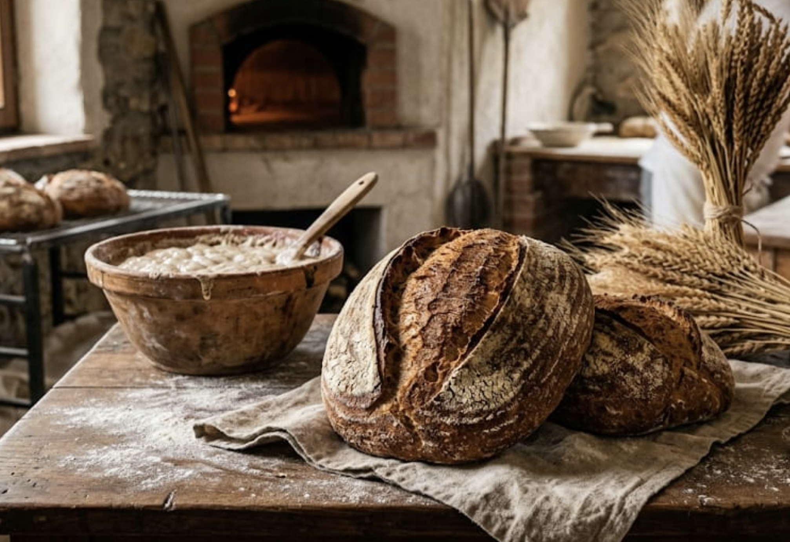
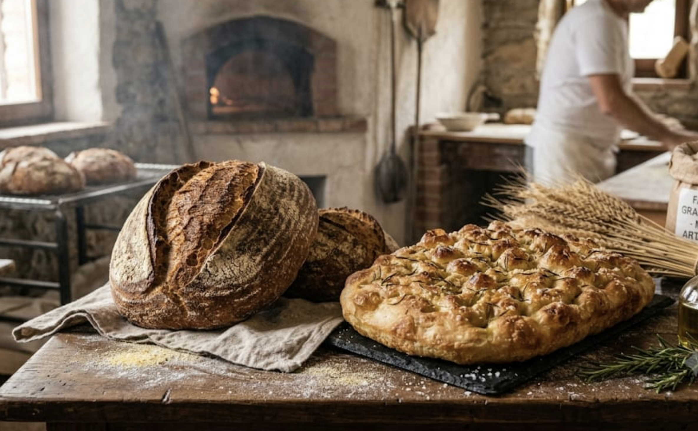
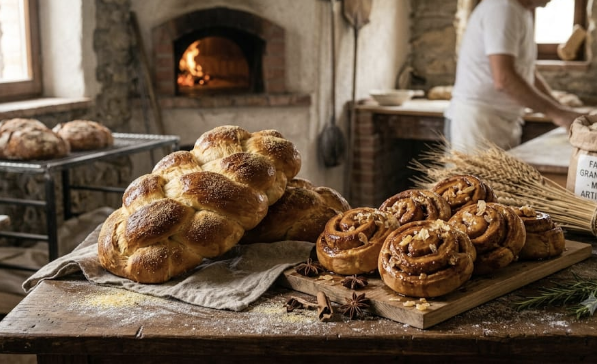
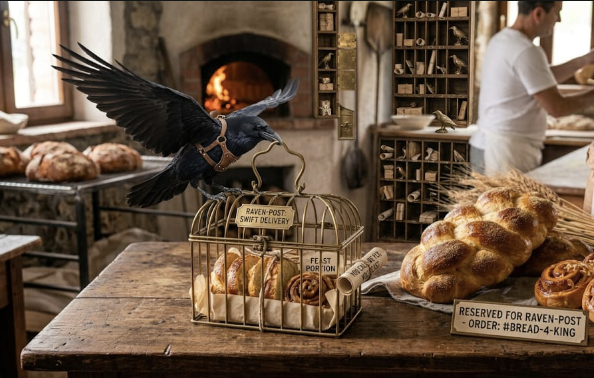

Ancient grains, slow fermentation, and flavor blessed by the Æsir.
Forged at dawn with mortal hands and old Norse recipes—crackling crusts, cloud-soft crumb, and aromas so mighty even Thor follows the scent.
Summon Your Basket

Ancient grains, slow fermentation, and flavor blessed by the Æsir.

Loaves and focaccias with a thunder-level crunch worthy of Mjölnir.

Daily saga specials: mead-honey buns and “Bifrost” braided bread.

Swift delivery by raven-post: you call, we fly, you feast.
Since tasting their rye loaf, I save my thunder for battles. Perfect crust, heroic crumb—at last, bread worthy of Asgard.